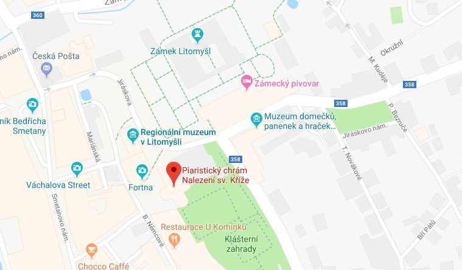

Marita & Jiří
4. května 2019
Litomyšl je Maritky srdeční místo. Miluje jeho atmosféru i čokoládu na náměstí. Místo pro svatební obřad tedy nebylo složité vybrat. Piaristický chrám Nalezení sv. Kříže je poklad sám o sobě. To uvidíte sami, až vejdete dovnitř. Svatební obřad začíná ve 13:00, tak ho nezmeškejte.
